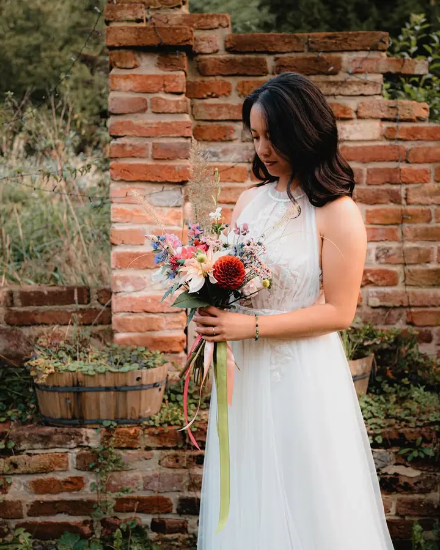
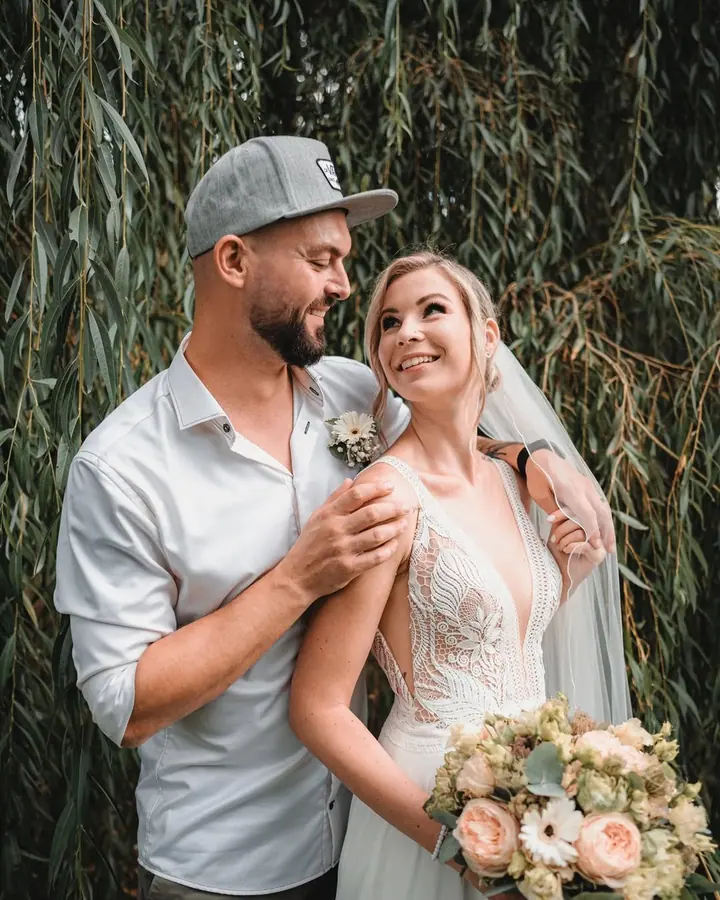
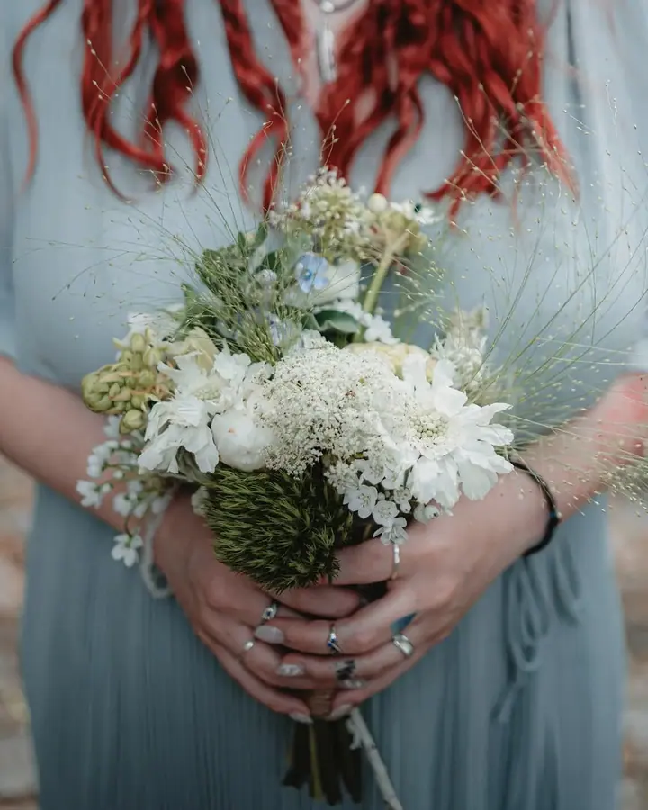

Svatby
Ještě před svatbou se potkáme osobně v Praze nebo online, abych věděla, jestli plánujete velkou párty, nebo klidné posezení s nejbližšími. Nabízím tři balíčky, od malé svatby s obřadem až po celý den od příprav po večerní oslavu.

Jmenuji se Anička Jeřábková a fotím svatby, eventy, páry i rodiny v Praze, v Pardubicích a okolí. Záleží mi na tom, aby bylo focení uvolněné a příjemné i pro ty z vás, k…
Rezervovat termínZaměřuji se na reportážní, svatební a portrétní fotografii. Při focení hlavně sleduji, co se kde děje, a snažím se zachytit všechny zajímavé okamžiky. I na úplně obyčejné chvíle se dívám tak, aby na fotkách působily zajímavě a jedinečně.


Fotím od roku 2015 a od té doby se pořád učím a své fotky zdokonaluji. Focení byl můj sen a jsem šťastná, že si ho můžu plnit. Ke každému focení přistupuji individuálně, protože každý člověk i každá akce je jiná.
Kromě focení miluju výběrovou kávu, takže se s vámi ráda potkám v nějaké pěkné pražské kavárně. Při úpravách fotek mi často dělá společnost náš čtyřnohý chlupáč Eddie. On a můj muž jsou pro mě velkou inspirací ve všem, co dělám.
Co fotím
Ještě před svatbou se potkáme osobně v Praze nebo online, abych věděla, jestli plánujete velkou párty, nebo klidné posezení s nejbližšími. Nabízím tři balíčky, od malé svatby s obřadem až po celý den od příprav po večerní oslavu.
S páry a většími dětmi chodíme ven, do přírody nebo do historického centra města, malá miminka nejraději fotím doma. Samotné focení trvá chvilku, se mnou strávíte něco málo přes hodinku.
Na akcích hlavně sleduji, co se kde děje, a snažím se zachytit všechny zajímavé okamžiky. I na úplně obyčejné chvíle se dívám tak, aby na fotkách působily zajímavě a jedinečně.
Fotky, na kterých je atmosféra vašeho podnikání, vaši lidé i prostory. Většinou fotíme přímo tam, kde podnikáte, a fotky vám dodám do 14 dní.
Postup
Napište mi e-mailem nebo na sociálních sítích, jestli mám volno. Pokud ano, pošlu vám zálohovou fakturu a po jejím zaplacení je termín závazně váš.
Potkáme se osobně v Praze nebo online, nejraději v klidné kavárně. Zjistím, jak si den představujete, a doladíme, jestli vám vybraný balíček sedí.
Asi dva týdny před svatbou si ověřím, že se nic nezměnilo. V den svatby znám celý harmonogram i vaše přání a vím, kdy a kde mám být.
První fotky dostanete už pár dní po svatbě. Všechny ostatní pak najdete v soukromé online galerii v plné kvalitě, barevné i černobílé.
Otázky
Většina lidí, které fotím, stojí před foťákem poprvé. Focení proto vedu tak, aby bylo co nejpřirozenější a nejpříjemnější. Společně najdeme úhly, ve kterých se budete cítit dobře.
Mám tři svatební balíčky. MINI za 10 000 Kč obsahuje až 3 hodiny focení a minimálně 100 fotografií, STANDARD za 18 000 Kč až 7 hodin focení, minimálně 250 fotografií a 30 tištěných fotek.
Finální počet stanovený nemám, ale v balíčku vám slíbím minimum. Odevzdávám všechny fotky, které se povedou. Byla by škoda, aby zůstaly jen u mě na disku.
Mimo Prahu jsem často v Pardubicích, ale na svatbu za vámi ráda dojedu kamkoliv. V balíčku STANDARD je doprava do 50 km v ceně.
Po poptávce vám pošlu krátký formulář o vaší značce a potkáme se osobně v Praze nebo online. Focení obvykle trvá 1 až 2 hodiny a fotky dostanete do 14 dní v plné kvalitě i zmenšené pro sociální sítě.